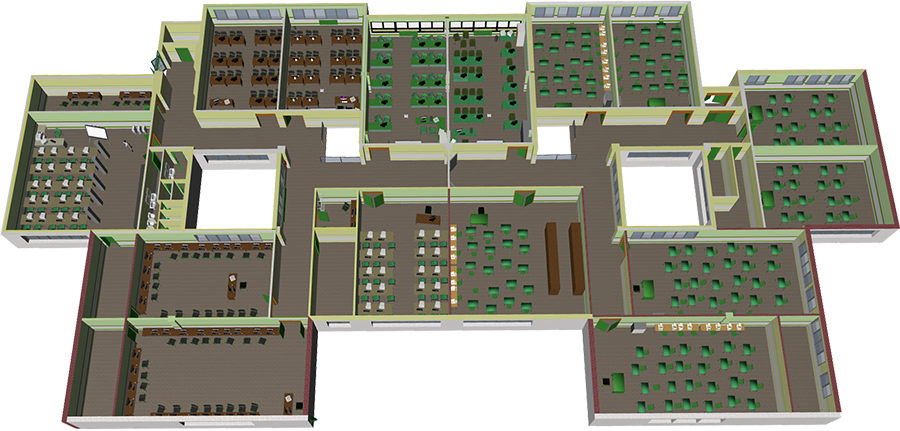

						
						<map name="upper_map" id="upper_map">
							<area shape="rect" id="upper_a-finan" coords="123,317,307,418" href="#" alt="Aula financiera" />
							<area shape="poly" coords="365,5" href="#" alt="" />
							<area shape="poly" id="upper_aisle-inf3" coords="366,3,360,109,321,109,316,185,311,232,282,233,283,145,287,5" href="#" alt="Pasillo e Informática 3" />
							<area shape="rect" coords="448,18,532,147" href="#" alt="" />
						</map>